来源：用户提供的 笔记(1).zip / 03_笔记/day02_变量_类型转换_运算符/day02.变量_数据类型转换_运算符.md。保留原课程内容，历史环境、示例错误和故意报错的教学代码应结合上下文阅读。
模块二.变量 数据类型转换 运算符
1.字节:计算机存储数据的最小存储单元(byte或者B)
8bit = 1B -> 往后都是1024
2.常用的dos命令
a.切换盘符 盘符名:
b.查看 dir
c.进入指定文件夹 cd 文件夹名 cd 文件夹名\文件夹名
d.退到上一级 cd..
e.退到根目录 cd\
f.清屏 cls
g.退出黑窗口 exit
h.创建文件夹 mkdir 文件夹名 mkdir 文件夹名\文件夹名
i.删除文件夹 rd 文件夹名 被删除的文件夹必须是空的,删除之后不走回收站
j.删除文件 del 文件名.后缀名 del *.后缀名
3.jdk和jre以及jvm关系
jdk包含jre,jre包含jvm
4.jvm和跨平台
想要实现跨平台,就需要在不同的操作系统上安装不同版本的jvm
5.环境变量 -> JAVA_HOME
6.程序入门
a.编写:
public class 类名{
public static void main(String[] args){
System.out.println("helloworld");
}
}
b.编译:
javac java文件名.java
c.运行:
java class文件名
7.注释:对代码的解释说明
单行注释: //
多行注释: /**/
文档注释: /***/
8.关键字:java提前定义好的,具有特殊含义的小写单词,在高级记事本中颜色特殊
9.常见问题
a.编码问题:写代码以及运行遵守的编码要一致
b.java文件名和类名一致问题
带public的类类名要和java文件名一致
一个java文件中最好写一个类
10.println和print区别
相同点:都是输出语句
不同点:println自带换行效果,print不带换行效果
第二大模块重点:常量 变量 类型转换 进制的转换
1.常量的使用
2.变量的使用
3.会强制类型转换
第一章.常量
1.概述:在代码的运行过程中,值不会发生改变的数据
2.分类:
整数常量:所有整数
小数常量:所有带小数点的
2.5 1.5 2.0
字符常量:带单引号的 '' 单引号中必须有且只能有一个内容
'1'(算) '11'(不算) ''(不算) 'a1'(不算)
' '(算) ' '(两个空格不算)
'写一个tab键'(算)
字符串常量:带双引号的 "" 双引号中内容随意
"" "helloworld"
布尔常量:true(真) false(假) -> 这两个单词不要加双引号
"true"(这样写属于字符串,不属于布尔常量)
空常量:null 代表的是数据不存在
public class Demo01Constant{
public static void main(String[] args){
//整数常量
System.out.println(1);
System.out.println(-1);
//小数常量
System.out.println(1.5);
System.out.println(1.0);
//字符常量 单引号中必须有且只能有一个内容
System.out.println('1');
//System.out.println('11');错误
System.out.println(' ');//一个空格算一个内容
//System.out.println(' ');//四个空格算四个内容,所以不属于字符常量
System.out.println(' ');//tab键算一个内容
//字符串常量
System.out.println("本人是尚硅谷第一帅的男人");
System.out.println("");
//布尔常量
System.out.println(true);
System.out.println(false);
//空常量 不能直接使用
//System.out.println(null);
}
}
public class Demo02Constant{
public static void main(String[] args){
System.out.println(10+3);//13
System.out.println(10-3);//7
System.out.println(10*3);//30
/*
/前后如果都是整数,结果只取整数部分
/前后只要有一个数带小数点,结果就是正常小数了
*/
System.out.println(10/3);//3
System.out.println(10.0/3);
System.out.println(10/3.0);
}
}
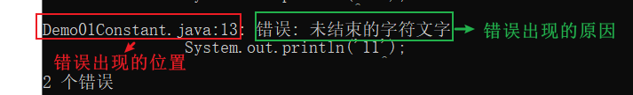
第二章.变量
| 数据类型 | 关键字 | 内存占用 | 取值范围 |
|---|---|---|---|
| 字节型 | byte | 1个字节 | -128 至 127 定义byte变量时超出范围,废了 |
| 短整型 | short | 2个字节 | -32768 至 32767 |
| 整型 | int（默认） | 4个字节 | -2^31^ 至 2^31^-1 正负21个亿 -2147483648——2147483647 | | 长整型 | long | 8个字节 | -2^63^ 至 2^63^-1 19位数字 -9223372036854775808到9223372036854775807 | | 单精度浮点数 | float | 4个字节 | 1.4013E-45 至 3.4028E+38 | | 双精度浮点数 | double（默认） | 8个字节 | 4.9E-324 至 1.7977E+308 | | 字符型 | char | 2个字节 | 0 至 2^16^-1 | | 布尔类型 | boolean | 1个字节 | true，false(可以做判断条件使用) |
1.变量的介绍以及使用
1.变量的数据类型:
基本数据类型:4类8种
整型:byte short int long
浮点型:float double
字符型:char
布尔型:boolean
引用数据类型: 类 数组 接口 枚举 注解
2.概述:在代码的运行过程中,值会随着不同的情况而随时发生改变的数据
3.作用:一次接收一个数据
将来定义一个变量,接收一个值,后续可能会根据不同的情况对此值进行修改,此时可以用变量
4.定义:
a.数据类型 变量名 = 值;
b.数据类型 变量名;
变量名 = 值;
c.连续定义三个相同类型的变量
数据类型 变量名1,变量名2,变量名3;
变量名1 = 值;
变量名2 = 值;
变量名3 = 值;
比如:int i,j,k;
i = 10;
j = 20;
k = 30;
数据类型 变量名1 = 值,变量名2 = 值,变量名3 = 值;
比如: int i = 10,j = 20,k = 30;
正确读法:先看等号右边的,再看等号左边的 -> 将等号右边的数据赋值给等号左边的变量
哪怕等号右边有运算,我们都得先将等号右边的运算算出一个值来,最后赋值给等号左边的变量
5.注意:
a.字符串不属于基本数据类型,属于引用数据类型,用String表示
String是一个类,只不过字符串在定义的时候可以和基本数据类型格式一样
6.float和double的区别:
a.float的小数位只有23位二进制,能表示的最大十进制为2的23次方(8388608),是7位数,所以float型代表的小数,小数位能表示7位
b.double的小数位只有52位二进制,能表示的最大十进制为(4 503 599 627 370 496),是16位数,所以double型代表的小数,小数位能表示出16位
7.切记:将来开发不要用float或者double直接参与运算,因为直接参与运算会有精度损失问题
public class Demo03Var{
public static void main(String[] args){
//byte
byte num1 = 100;
System.out.println(num1);
//short
short num2 = 1000;
num2 = 1001;
System.out.println(num2);
//int 整数的默认类型
int num3 = 10000;
num3 = 1;
System.out.println(num3);
//long -> 定义long型的变量后面加个L
long num4 = 10L;
System.out.println(num4);
//float -> 定义float型变量的时候后面加个F
float num5 = 2.5F;
System.out.println(num5);
//double -> 小数的默认类型
double num6 = 2.5;
System.out.println(num6);
//char
char num7 = 'A';
System.out.println(num7);
//boolean
boolean num8 = true;
boolean num9 = false;
/*
num9 = false
num8 = num9 -> 将num9的值赋值给num8 -> 相当于num8 = false
*/
num8 = num9;
System.out.println(num8);
//String -> 是一个引用数据类型,属于类的一种,但是定义和基本类型一致
String name = "金莲";
System.out.println(name);
}
}
public class Demo04Var{
public static void main(String[] args){
int num1 = 10;
int num2 = 3;
int sum = num1+num2;
System.out.println(sum);//13
int sub = num1-num2;
System.out.println(sub);//7
//System.out.println(num1*num2);//30
int mul = num1*num2;
System.out.println(mul);//30
/*
由于/前后都是整数,结果取整数部分,结果还赋值给一个整数变量
*/
int div = num1/num2;
System.out.println(div);//3
double div1 = num1/num2;//3.0
System.out.println(div1);
}
}
public class Demo05Var{
public static void main(String[] args){
/*
转义字符: \
可以这样简单理解:
a.将普通字符转成具有特殊含义的字符
b.将具有特殊含义的字符转成普通字符
*/
/*
n:普通字符
\n:换行符
*/
System.out.print("春眠不觉晓\n");
System.out.print("处处闻啼鸟\n");
System.out.print("夜来风雨声\n");
System.out.print("花落知多少\n");
/*
t:普通字符
\t:制表符 -> 就是tab键
*/
System.out.println("本人\t是尚硅谷第一帅");
/*
用String表示一个路径
在java中两个\\代表一个\
*/
String path = "E:\\01_javase_video\\code";
System.out.println(path);
}
}
public class Demo06Var{
public static void main(String[] args){
float a = 10;
float b = 3;
float result = a/b;
System.out.println(result);//3.3333333
double c = 10;
double d = 3;
double result02 = c/d;
System.out.println(result02);//3.3333333333333335
float x = 3.55F;
float y = 2.12F;
float result03 = x-y;
System.out.println(result03);//1.4300001
}
}
2.变量使用时的注意事项
1.变量不初始化(第一次赋值)不能直接使用
2.在同一个作用域(一对大括号就是一个作用域)中不能定义重名的变量
3.不同作用域中的数据尽量不要随意互相访问
在小作用域中能直接访问大作用域中的变量
在大作用域中不能直接访问小作用域中的变量
public class Demo07Var{
public static void main(String[] args){
int i = 10;
System.out.println(i);
int j;
j = 10;
System.out.println(j);
int k = 10;
//int k = 20;//只要是变量名前带具体的数据类型就是重新定义
System.out.println(k);
{
int x = 1000;
System.out.println(k);
}
//System.out.println(x);
}
}
3.练习
定义一个人类,用变量表示 姓名 性别 年龄 身高 体重
public class Demo08VarPerson{
public static void main(String[] args){
//姓名
String name = "张三";
//性别
char sex = '男';
//年龄
int age = 20;
//身高
double height = 175.5;
//体重
double weight = 145.5;
System.out.println(name);
System.out.println(sex);
System.out.println(age);
System.out.println(height);
System.out.println(weight);
}
}
第三章.标识符
1.概述:咱们给类,方法,变量取的名字
2.注意:
a.硬性规定(必须遵守)
标识符可以包含"英文字母","数字","$和_"
标识符不能以数字开头 int i1 = 100(正确) int 1i = 100(错误)
标识符不能是关键字 int static = 100(错误) int public = 100(错误)
b.软性建议(可遵守可不遵守,但是建议遵守)
给类取名字:遵循大驼峰式 -> 每个单词首字母大写
给方法和变量取名字:遵循小驼峰式 -> 从第二个单词开始往后首字母大写
见名知意
第四章.数据类型转换
1.什么时候发生类型转换:
a.等号左右两边类型不一致
b.不同类型的数据做运算
2.分类:
a.自动类型转换
将取值范围小的数据类型赋值给取值范围大的数据类型 -> 小自动转大
取值范围小的数据类型和取值范围大的数据类型数据做运算 -> 小自动转大
b.强制类型转换
当将取值范围大的数据类型赋值给取值范围小的数据类型 -> 需要强转
3.基本类型中按照取值范围从小到大排序:
byte,short,char -> int -> long -> float -> double
1.自动类型转换
1.将取值范围小的数据类型赋值给取值范围大的数据类型 -> 小自动转大
2.取值范围小的数据类型和取值范围大的数据类型做运算 -> 小自动转大
public class Demo09DataType{
public static void main(String[] args){
/*
等号右边是整数,整数默认类型为int
等号左边是long型的变量
将取值范围小的数据类型赋值给取值范围大的数据类型,发生了自动类型转换
*/
long num1 = 100;
System.out.println(num1);
int i = 10;
double b = 2.5;
/*
double = int+double
double = double+double
int自动提升为了double,发生了自动类型转换
*/
double sum = i+b;
System.out.println(sum);
}
}
2.强制类型转换
1.将取值范围大的数据类型赋值给取值范围小的数据类型
取值范围小的数据类型 变量名 = 取值范围大的数据类型 -> 需要强转
2.怎么强转:
取值范围小的数据类型 变量名 = (取值范围小的数据类型)取值范围大的数据类型
public class Demo10DataType{
public static void main(String[] args){
/*
等号右边的数据是小数,小数默认类型为double
等号左边的变量是float型
将取值范围大的赋值给取值范围小 -> 报错,需要强转
*/
//float num1 = 2.5;
//float num1 = (float)2.5;
float num1 = 2.5F;
System.out.println(num1);
}
}
3.强转的注意事项
1.不要随意写成强转的格式,因为会有精度损失问题以及数据溢出现象,除非没有办法
2.byte,short定义的时候如果等号右边是整数常量,如果不超出byte和short的范围,不需要我们自己强转,jvm自动转型
byte,short如果等号右边有变量参与,byte和short自动提升为int,然后结果再次赋值给byte或者short的变量,需要我们自己手动强转
3.char类型数据如果参与运算,会自动提升为int型,如果char类型的字符提升为int型会去ASCII码表(美国标准交换代码)范围内去查询字符对应的int值,如果在ASCII码表范围内没有对应的int值,回去unicode码表(万国码)中找
public class Demo11DataType{
public static void main(String[] args){
//精度损失
int i = (int)2.9;
System.out.println(i);
/*
数据溢出
int型占内存4个字节,4个字节变成二进制是32位
100个亿: 10 0101 0100 0000 1011 1110 0100 0000 0000 -> 34位二进制
100个亿的二进制位比int型的二进制位多出来2位,此时干掉最前面的2位
101 0100 0000 1011 1110 0100 0000 0000
101 0100 0000 1011 1110 0100 0000 0000->1410065408
*/
int j = (int)10000000000L;
System.out.println(j);//1410065408
System.out.println("=========================");
byte b = 10;
System.out.println(b);
b = (byte)(b+1);
System.out.println(b);
System.out.println("=========================");
char c = '中';
System.out.println(c+0);//20013
}
}
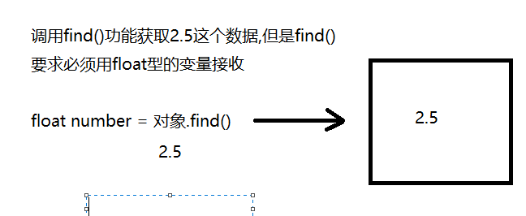
第五章.进制的转换(了解)
| 十进制 | 二进制 | 八进制 | 十六进制 |
|---|---|---|---|
| 0 | 0 | 0 | 0 |
| 1 | 1 | 1 | 1 |
| 2 | 10 | 2 | 2 |
| 3 | 11 | 3 | 3 |
| 4 | 100 | 4 | 4 |
| 5 | 101 | 5 | 5 |
| 6 | 110 | 6 | 6 |
| 7 | 111 | 7 | 7 |
| 8 | 1000 | 10 | 8 |
| 9 | 1001 | 11 | 9 |
| 10 | 1010 | 12 | a或A |
| 11 | 1011 | 13 | b或B |
| 12 | 1100 | 14 | c或C |
| 13 | 1101 | 15 | d或D |
| 14 | 1110 | 16 | e或E |
| 15 | 1111 | 17 | f或F |
| 16 | 10000 | 20 | 10 |
3.1 十进制转成二进制
辗转相除法 -> 循环除以2,取余数
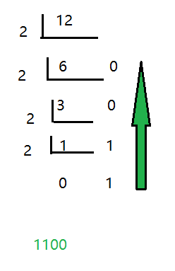
3.2 二进制转成十进制
8421规则
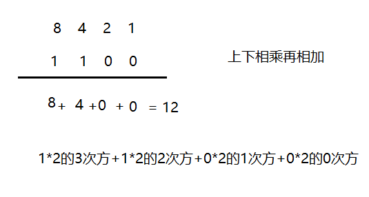
3.3 二进制转成八进制
将二进制数分开 (3位为一组)
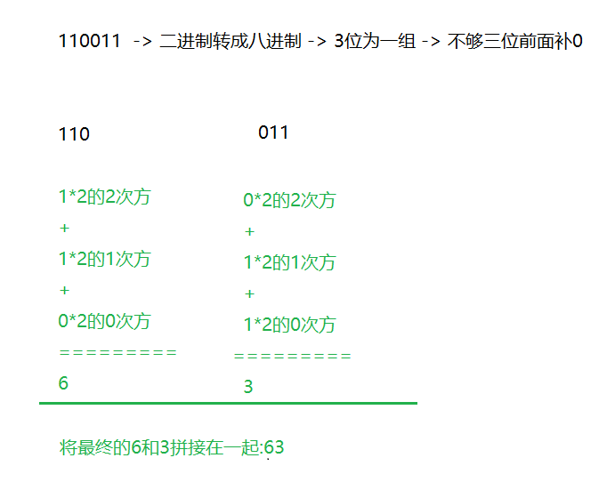
3.4 二进制转成十六进制
将二进制数分组-> 4位为一组
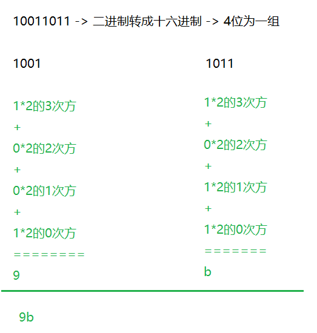
第六章.位运算符(了解)
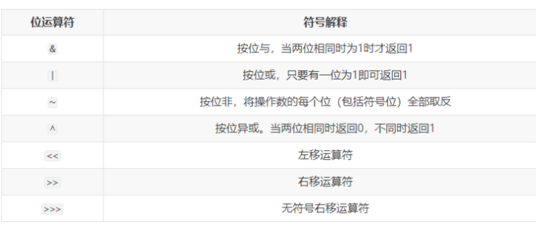
1.符号的介绍:
a. &(与) -> 有假则假
b. |(或) -> 有真则真
c. ~(非) -> 取反
d. ^(异或) -> 符号前后结果一样为false,不一样为true
true ^ true -> false
false ^ false -> false
true ^ false -> true
false ^ true -> true
2. 1代表true 0代表false
3.我们要知道计算机在存储数据的时候都是存储的数据的补码,计算也是用的数据的补码
但是我们最终看到的结果是原码换算出来的
原码 反码 补码
4.正数二进制最高位为0; 负数二进制最高位为1
5.如果是正数 原码 反码 补码 一致
比如:5的原码 反码 补码一致:
0000 0000 0000 0000 0000 0000 0000 0101 -> 因为是正数,二进制最高位为0
如果是负数,原码 反码 补码不一样了
反码是原码的基础上最高位不变,剩下的0和1互换
补码是在反码的基础上+1
比如:-9
原码: 1000 0000 0000 0000 0000 0000 0000 1001
反码: 1111 1111 1111 1111 1111 1111 1111 0110
补码: 1111 1111 1111 1111 1111 1111 1111 0111
（1）左移：<<
运算规则：左移几位就相当于乘以2的几次方
注意：当左移的位数n超过该数据类型的总位数时，相当于左移（n-总位数）位
2<<2 结果等于8
快速算法: 2*(2的2次方)
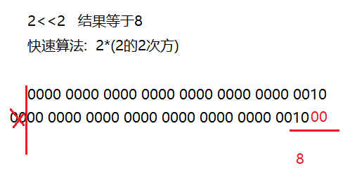
-2<<2 等于-8
快速算法: -2*(2的2次方)
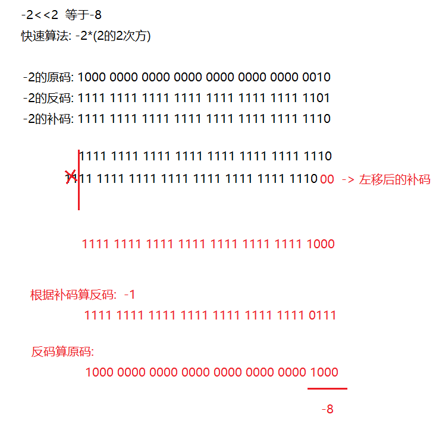
（2）右移：>>
快速运算：类似于除以2的n次，如果不能整除，向下取整
9>>2 等于2
快速算法: 9除以(2的2次方)
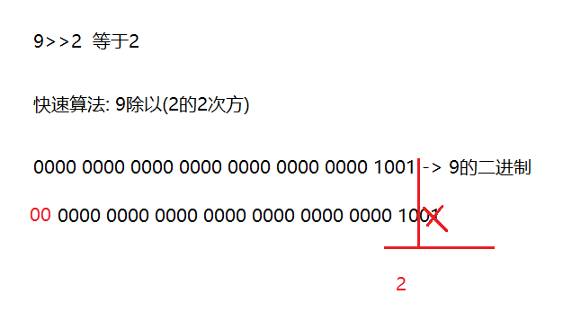
-9>>2 等于-3
快速算法: -9除以(2的2次方)
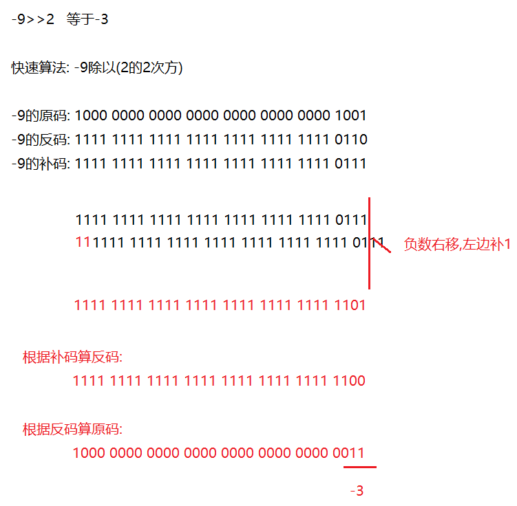
（3）无符号右移：>>>
运算规则：往右移动后，左边空出来的位直接补0，不管最高位是0还是1空出来的都拿0补
正数：和右移一样
9>>>2 等于2
负数：右边移出去几位，左边补几个0，结果变为正数
-9>>>2
结果为:1073741821
笔试题: 8>>>32位 -> 相当于没有移动还是8
8>>>34位 -> 相当于往右移动2位
（4）按位与：&
小技巧:将0看成为false 将1看成true
运算规则：对应位都是1才为1,相当于符号左右两边都为true,结果才为true
1&1 结果为1
1&0 结果为0
0&1 结果为0
0&0 结果为0
5&3 结果1
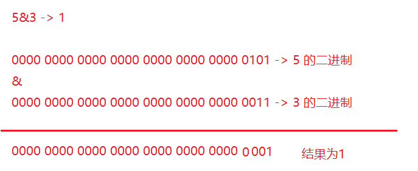
（5）按位或：|
运算规则：对应位只要有1即为1,相当于符号前后只要有一个为true,结果就是true
1|1 结果1
1|0 结果1
0|1 结果1
0|0 结果0
5|3 结果为7
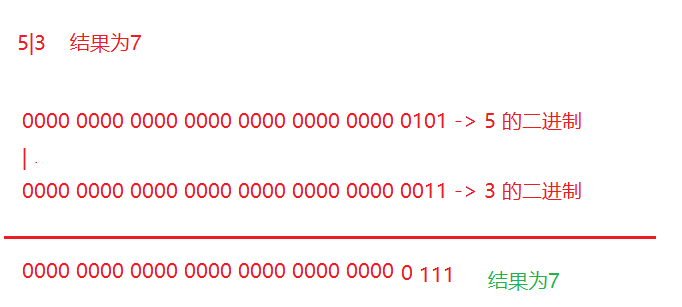
（6）按位异或：^
运算规则：对应位一样的为0,不一样的为1
1^1 结果为0 false
1^0 结果为1 true
0^1 结果为1 true
0^0 结果0 false
5^3 结果为6
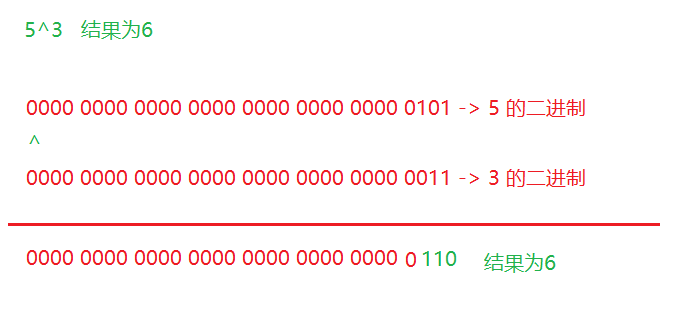
（7）按位取反
运算规则：~0就是1
~1就是0
~10 结果为-11
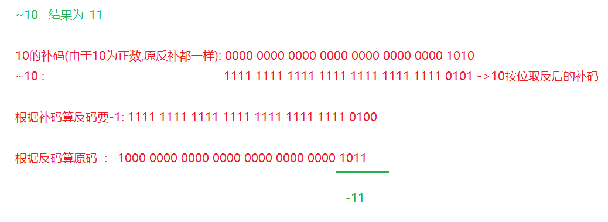
第七章.运算符的优先级(了解)
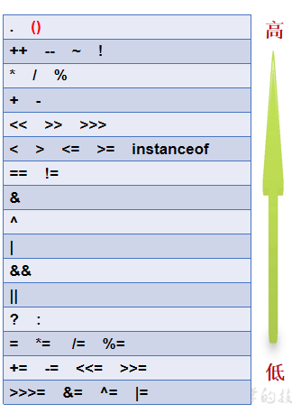
提示说明：
（1）表达式不要太复杂
（2）先算的使用(),记住,如果想让那个表达式先运行,就加小括号就可以了
i<(n*m)